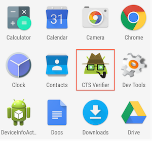
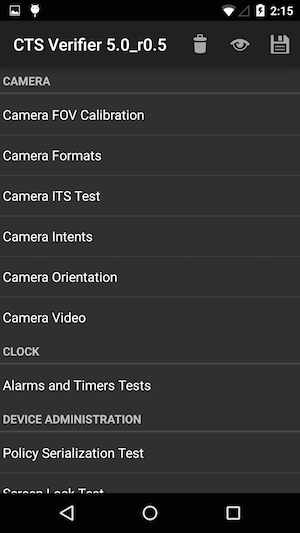
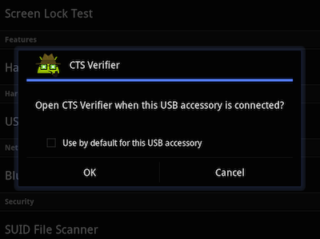
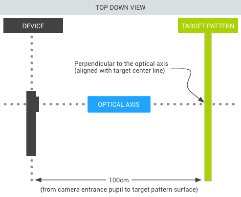
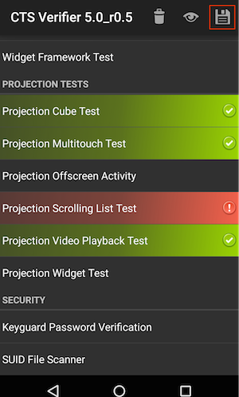
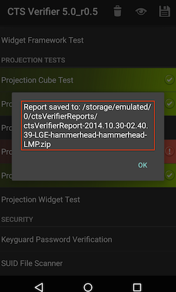

In this document
The Android Compatibility Test Suite Verifier (CTS Verifier) is a supplement to the Compatibility Test Suite (CTS). While CTS checks those APIs and functions that can be automated, CTS Verifier provides tests for those APIs and functions that cannot be tested on a stationary device without manual input, like audio quality, touchscreen, accelerometer, camera, etc.
Test preparation
The device must have verified Android API compatibility by successfully passing the Compatibility Test Suite.
Hardware requirements
- A Linux computer with USB 2.0 compatible port
- A second Android device with a known compatible Bluetooth, Wi-Fi direct, and NFC Host Card Emulation (HCE) implementation
Setup
- Install the Android SDK on the Linux computer
- Download the appropriate CTS Verifier.apk for the version of Android under test.
- Install CTS Verifier.apk to the Device Under Test (DUT).
adb install -r -g CtsVerifier.apk - Ensure that the device has its system data and time set correctly.
CTS Verifier test procedure
- After the CTS Verifier.apk has been installed, launch the CTS Verifier
application:

Figure 1. CTS Verifier icon
- Once opened, the CTS Verifier displays a list of all test sets available for
manual verification:

Figure 2. CTS Verifier menu of tests
- Each test contains a set of common elements (in some tests, Pass/Fail is
determined automatically):
- Info—a set of instructions to run the test. This will appear as a popup the first time each test is opened or whenever the Info button (？) is pressed.
- Pass—If the DUT meets the test requirements per the instructions from Info, press the Pass button (✓).
- Fail—If the DUT does not meet the test requirements per the instructions from Info, press the Fail button (！).
Figure 3. Video quality verifier
Specific test requirements
USB Accessory
In order to run the USB Accessory test, you need a Linux computer to run the USB desktop machine (host) program.
- Connect the DUT to a computer.
- Execute the cts-usb-accessory program on the computer found in the CTS Verifier package.
- A popup message will appear on the DUT. Select OK and go into the USB Accessory Test in the CTS Verifier application.
Figure 4. Screen lock test
- Output similar to below will appear on the computer’s console.
out/host/linux-x86/cts-verifier/android-cts-verifier$ ./cts-usb-accessory CTS USB Accessory Tester Found possible Android device (413c:2106) - attempting to switch to accessory mode... Failed to read protocol version Found Android device in accessory mode (18d1:2d01)... [RECV] Message from Android device #0 [SENT] Message from Android accessory #0 [RECV] Message from Android device #1 [SENT] Message from Android accessory #1 [RECV] Message from Android device #2 [SENT] Message from Android accessory #2 [RECV] Message from Android device #3 [SENT] Message from Android accessory #3 [RECV] Message from Android device #4 [SENT] Message from Android accessory #4 [RECV] Message from Android device #5 [SENT] Message from Android accessory #5 [RECV] Message from Android device #6 [SENT] Message from Android accessory #6 [RECV] Message from Android device #7 [SENT] Message from Android accessory #7 [RECV] Message from Android device #8 [SENT] Message from Android accessory #8 [RECV] Message from Android device #9 [SENT] Message from Android accessory #9 [RECV] Message from Android device #10 [SENT] Message from Android accessory #10
Camera field of view calibration
This field of view calibration procedure is designed to be a quick way to determine the device field of view with moderate accuracy.
Setup - Print the calibration-pattern.pdf target file and mount it on a rigid backing. Print on 11” x 17” or A3. Orient the camera device and the printed target as shown in the diagram below:
Figure 5. Camera printed target
Setting the target width - Measure the distance between the solid lines on the target pattern in centimeters to account for printing inaccuracies (~38 cm).
- Start the calibration application.
- Press the setup button and select “Marker distance” to enter the distance.
- Measure and enter the distance to the target pattern (~100 cm).
- Press the back button to return to the calibration preview.
Calibration process - Verify that the device and target are placed as shown in the figure and the correct distances have been entered into the setup dialog.The preview will display the image with a vertical line overlaid onto it. This line should align with the center line of the target pattern. The transparent grid can be used with the other vertical lines to ensure that the optical axis is orthogonal to the target.
- Select an image resolution to test from the selector at the bottom left.
- Tap the screen to take a photo and enter the calibration mode (described below).
- Hit the back button and repeat for all supported image resolutions.
Calibration test (per resolution) In the calibration mode, the photo will be displayed with two vertical lines overlaid onto the image.These lines should align with the vertical lines on the target pattern within a few pixels. If they do not, then the reported field of view for that mode is inaccurate (assuming the setup is correct).Adjust the slider at the bottom of the screen until the overlay aligns with the target pattern as closely as possible. The displayed field of view will be a close approximation to the correct value when the overlay and the target pattern image are aligned. The reported field of view should be within +/-1 degree of the calibration value.
Exporting test reports
- After all tests are completed, tap the Save (disk) icon.
Figure 6. CTS Verifier Save icon
- A path to the saved report will be displayed in pop-up (e.g.
/mnt/sdcard/ctsVerifierReports/ctsVerifierReport-date-time.zip). Record the path.
Figure 7. CTS Verifier path to saved report
- Connect the device via USB to a computer with the SDK installed.
- From the computer’s SDK installation, run
adb pullto download the report from the device.- To download all reports run :
adb pull /mnt/sdcard/ctsVerifierReports/ . - The name of the reports are time-stamped based on the DUT’s system time.
- To clear results after they have been selected, select Menu > Clear. This will clear the Pass/Fail results.
- To download all reports run :